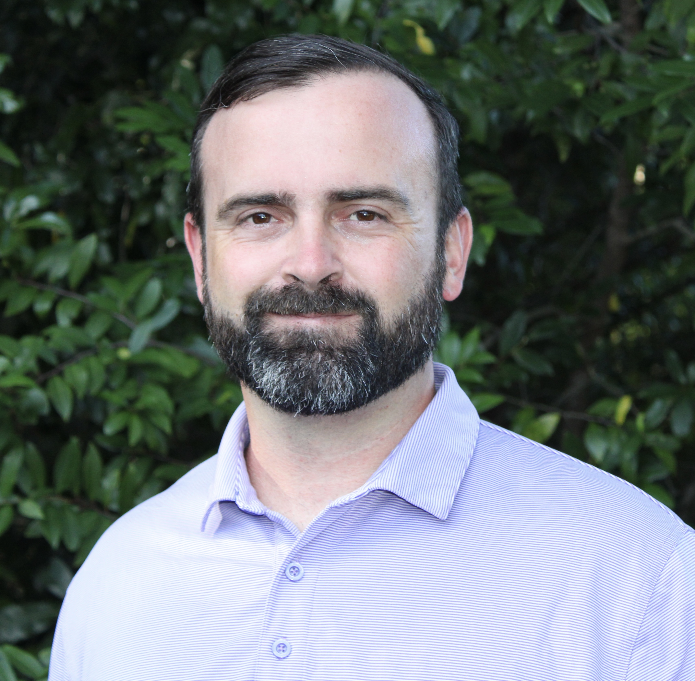
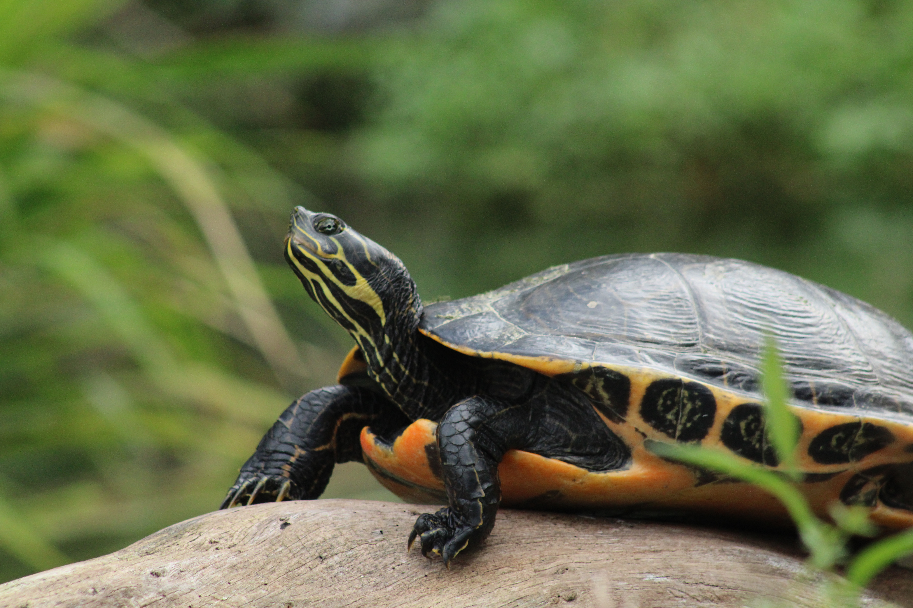
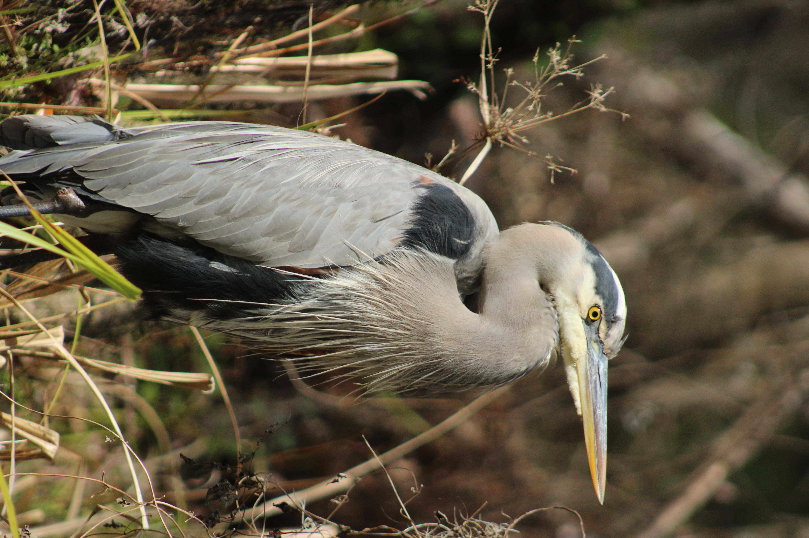
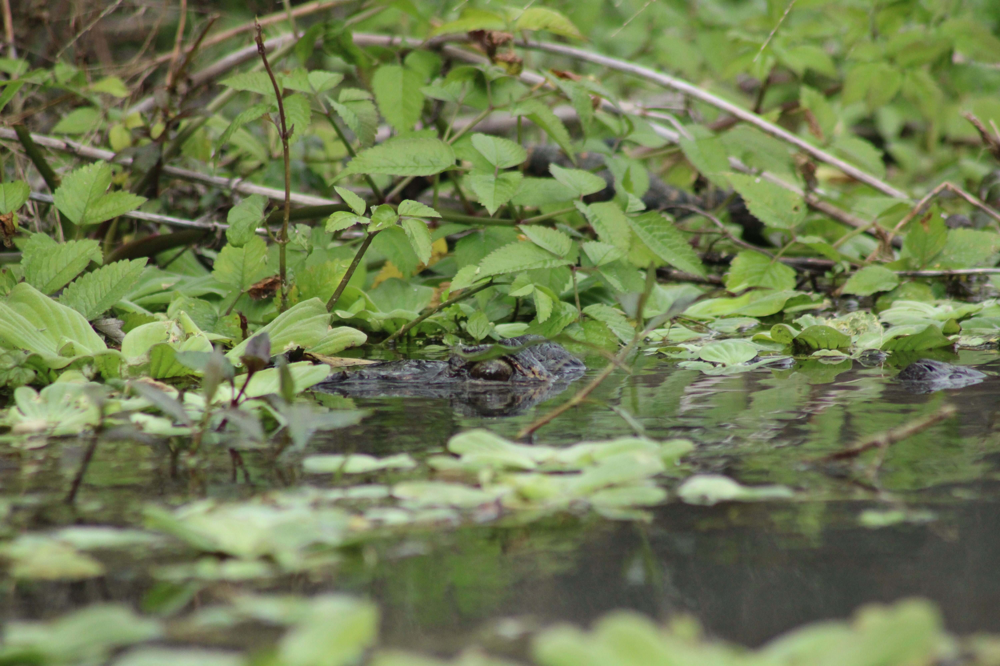

MY GOALS
FOR HIGH SPRINGS
- • Smart Revenue & Sensible Growth - Increasing city revenue by incentivizing clean business growth to meet our budgetary constraints without raising resident taxes.
- • The Hometown Test - Every decision by the commission must pass one test: Does this make High Springs a place where our children will want to stay and raise their own families.
- • Effective Governance & Mutual Respect True governance requires mutual respect. I am committed to constructive, respectful debate on the dais—focused on solutions, not on dividing our city or degrading our neighbors. A unified commission delivers impactful results.



Photos courtesy of my wife Julia Guinn